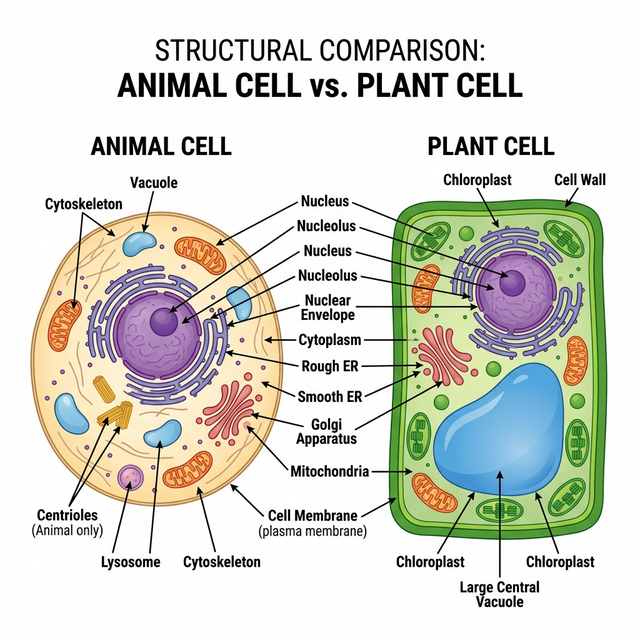

Chapter 8: Cell: The Unit of Life
When you look around, you see both living and non-living things. You must have wondered and asked yourself – ‘what is it that makes an organism living, or what is it that an inanimate thing does not have which a living thing has’ ? The answer to this is the presence of the basic unit of life – the cell in all living organisms.
All organisms are composed of cells. Some are composed of a single cell and are called unicellular organisms while others, like us, composed of many cells, are called multicellular organisms.
Cell Theory
In 1838, Matthias Schleiden, a German botanist, examined a large number of plants and observed that all plants are composed of different kinds of cells which form the tissues of the plant. At about the same time, Theodore Schwann (1839), a British Zoologist, studied different types of animal cells and reported that cells had a thin outer layer which is today known as the ‘plasma membrane’.
Schleiden and Schwann together formulated the cell theory. This theory however, did not explain as to how new cells were formed. Rudolf Virchow (1855) first explained that cells divided and new cells are formed from pre-existing cells (Omnis cellula-e cellula).
The cell theory as understood today is:
- All living organisms are composed of cells and products of cells.
- All cells arise from pre-existing cells.

Figure 8.1: Structural comparison of Plant and Animal Cells
Prokaryotic Cells
The prokaryotic cells are represented by bacteria, blue-green algae, mycoplasma and PPLO. They are generally smaller and multiply more rapidly than the eukaryotic cells. They may vary greatly in shape and size. The four basic shapes of bacteria are bacillus (rod like), coccus (spherical), vibrio (comma shaped) and spirillum (spiral).
The organisation of the prokaryotic cell is fundamentally similar even though prokaryotes exhibit a wide variety of shapes and functions. All prokaryotes have a cell wall surrounding the cell membrane except in mycoplasma. The fluid matrix filling the cell is the cytoplasm. There is no well-defined nucleus. The genetic material is basically naked.
Eukaryotic Cells
The eukaryotes include all the protists, plants, fungi and animals. In eukaryotic cells there is an extensive compartmentalisation of cytoplasm through the presence of membrane-bound organelles. Eukaryotic cells possess an organised nucleus with a nuclear envelope.
Cell Organelles
- Cell Membrane: The detailed structure of the membrane was studied only after the advent of the electron microscope. The currently accepted model is the Fluid Mosaic Model proposed by Singer and Nicolson (1972). The quasifluid nature of lipid enables lateral movement of proteins within the overall bilayer.
- Cell Wall: A non-living rigid structure which forms an outer covering for the plasma membrane of fungi and plants. Gives shape to the cell and protects the cell from mechanical damage and infection.
- Endomembrane System: Included are endoplasmic reticulum (ER), golgi complex, lysosomes and vacuoles, because their functions are coordinated.
- ER: Rough ER has ribosomes on its surface (protein synthesis). Smooth ER lacks ribosomes (lipid synthesis).
- Golgi apparatus: Discovered by Camillo Golgi. Functions primarily in packaging materials.
- Lysosomes: Membrane bound vesicular structures rich in hydrolytic enzymes.
- Mitochondria: the ‘power houses’ of the cell, produce cellular energy in the form of ATP.
- Plastids: Found in all plant cells and in euglenoides. Chloroplasts contain chlorophyll.
- Ribosomes: Granular structures composed of RNA and proteins; they are the protein factories. Eukaryotes have 80S ribosomes, while prokaryotes have 70S.
- Nucleus: Contains the genetic material (DNA).
Competency Based Questions (Previous Years & Sample Papers)
Q1. The resolving power of an optical microscope is theoretically limited by the diffraction of light, given by Abbe’s limit equation: $d = \frac{\lambda}{2 \cdot NA}$, where $d$ is the minimum resolvable distance, $\lambda$ is the wavelength of light, and $NA$ is the numerical aperture of the objective lens. If an electron microscope uses an electron beam with a wavelength ($\lambda$) that is exactly $100,000$ times shorter than visible green light ($\lambda \approx 500 nm$), calculate the theoretical minimum resolvable distance $d_{electron}$ (in picometers) for the electron microscope, assuming the $NA$ is effectively $0.05$ (note: electron lenses have inherently small NAs). Explain why this difference was historically required to discover the Endoplasmic Reticulum.
Answer
Let’s calculate the minimum resolvable distance $d$ for both microscopes for context.
Visible Light: $\lambda_{light} = 500 nm = 500 \times 10^{-9} m$
The wavelength for the electron microscope is $100,000$ ($10^5$) times shorter: $\lambda_{electron} = \frac{500 nm}{10^5} = 0.005 nm = 5 \text{ picometers (pm)}$
Now, calculating $d_{electron}$ using Abbe’s limit formula: $$ d_{electron} = \frac{\lambda_{electron}}{2 \cdot NA} $$ $$ d_{electron} = \frac{5 pm}{2 \cdot 0.05} $$ $$ d_{electron} = \frac{5 pm}{0.1} $$ $$ d_{electron} = 50 \text{ pm} $$
The theoretical minimum resolvable distance for the electron microscope is $50$ picometers.
Biological/Historical Justification: The Endoplasmic Reticulum (ER) consists of intricate networks of extremely thin lipid bilayer tubules and cisternae. A single lipid bilayer is roughly $5$ nm thick ($5000$ pm). Even the best optical light microscopes have a $d$ limit around $200-250$ nm, meaning any structure smaller or closer together than $200$ nm appears as a blurry blob. The intricate folds, membranes, and attached ribosomes (which are only about $20-30$ nm) of the ER were completely invisible under light microscopes. The invention of the electron microscope abruptly lowered the resolution limit $d$ down to the picometer scale, making organelle ultrastructure clearly visible for the first time.
Q2. During facilitated diffusion via biological membranes, the rate of transport ($V$) exhibits saturation kinetics as the concentration of the solute $[S]$ increases, modeled by the Michaelis-Menten-like equation: $V = \frac{V_{max} \cdot [S]}{K_m + [S]}$, where $V_{max}$ is the maximum transport rate and $K_m$ is the solute concentration at which the transport rate is exactly half of $V_{max}$. If a specific carrier protein in the cell membrane has a $V_{max} = 200 \text{ molecules/s}$ and $K_m = 5 mM$, what will be the transport rate when the external solute concentration $[S]$ is $5 mM$? Why does simple diffusion not exhibit an asymptote ($V_{max}$) in this manner?
Answer
Mathematical Calculation: Given: $V_{max} = 200$ $K_m = 5$ $[S] = 5$
Substitute into the equation: $$ V = \frac{V_{max} \cdot [S]}{K_m + [S]} $$ $$ V = \frac{200 \cdot 5}{5 + 5} $$ $$ V = \frac{1000}{10} $$ $$ V = 100 \text{ molecules/s} $$
The transport rate will be $100$ molecules/s (which confirms that $V$ is exactly half of $V_{max}$ when $[S] = K_m$).
Biological Justification:
- Facilitated Diffusion: Relies on a finite, limited number of physical carrier proteins or channels in the cell membrane. As the concentration of the solute $[S]$ increases, more carriers are occupied. Eventually, all available carriers are transporting molecules as fast as they can (saturated). Adding more solute cannot increase the rate further, creating the horizontal asymptote $V_{max}$.
- Simple Diffusion: Does not rely on proteins. Small, nonpolar molecules (like $O_2$ or $CO_2$) pass directly through the infinite phospholipid bilayer spacing. The rate of simple diffusion is strictly proportional to the concentration gradient (Fick’s Law), so it increases linearly without an upper saturation limit.
Q3. Plant cells differ from animal cells in possessing a large central vacuole, a rigid cell wall, and plastids. A student observes an unknown eukaryotic cell under a microscope. The cell is placed in a hypertonic solution. After 10 minutes, the plasma membrane has shrunk away from a rigid outer boundary, collapsing inward, but the overall shape of the outer boundary has barely changed. What is this phenomenon called? Based on this observation, is the cell likely a plant cell or an animal cell?
Answer
Phenomenon Identification: This phenomenon is called Plasmolysis. Because the external solution is hypertonic (higher solute concentration, lower water potential), water moves out of the cell via osmosis. This causes the cytoplasm and vacuole to lose volume, pulling the flexible plasma membrane away from the cell wall.
Cell Type Identification: The cell is most likely a Plant Cell. Only cells with a rigid, distinct extracellular bounding structure (like the cellulosic cell wall of plants) can undergo classical plasmolysis while maintaining the structural integrity of the outer boundary. If an animal cell (like a red blood cell) were placed in a hypertonic solution, the entire cell would shrink and shrivel up (crenation) because it lacks a rigid cell wall to hold the original geometric shape.